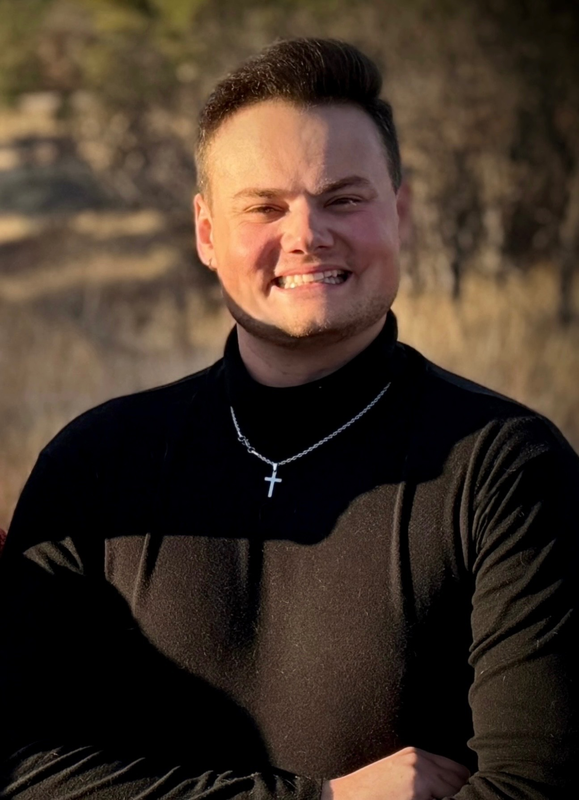
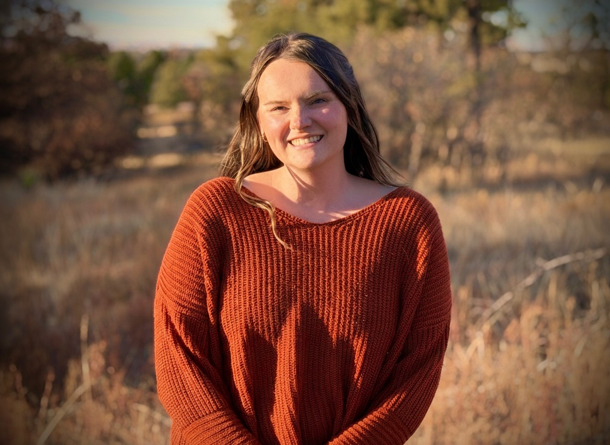

Cory Nasstrom
Co-founder
I’m Cory, a photographer dedicated to high-quality visual storytelling. My background in Film and TV
Broadcasting provides a technical foundation that allows me to capture cinematic moments in any
environment.
I’m a firm believer that life is best lived outdoors—whether I'm snowboarding down a mountain or
enjoying a weekend with my family and friends. I’m a dog lover, a proud uncle, and a local foodie
always
looking for the next great Denver experience. I strive to make every shoot feel like a day out with
friends: relaxed, fun, and authentically you.
Kayla Nasstrom
Co-founder
Hey, I’m Kayla! I’m a wife and first-time mom to the sweetest baby boy, and my family is the heart
behind everything I do. I’m a coffee lover who enjoys painting, DIY projects, and soaking in life’s
little moments with my family.
Behind the camera, my goal is to capture the moments that matter — real connections, genuine
emotion,
and meaningful stories. I specialize in weddings, families, and engagement sessions, and I’m
inspired by
all things love and family.
